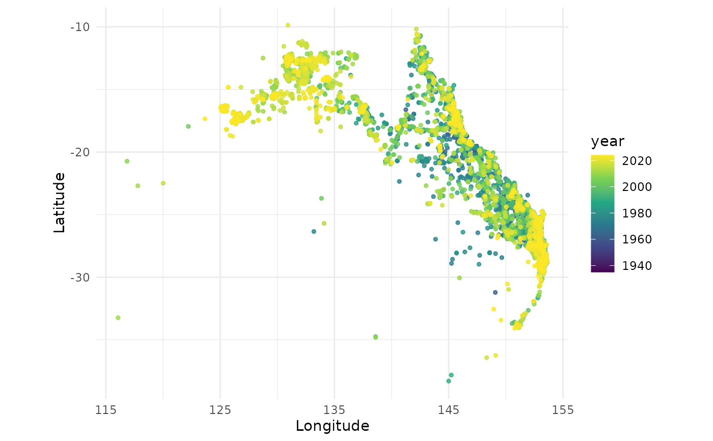
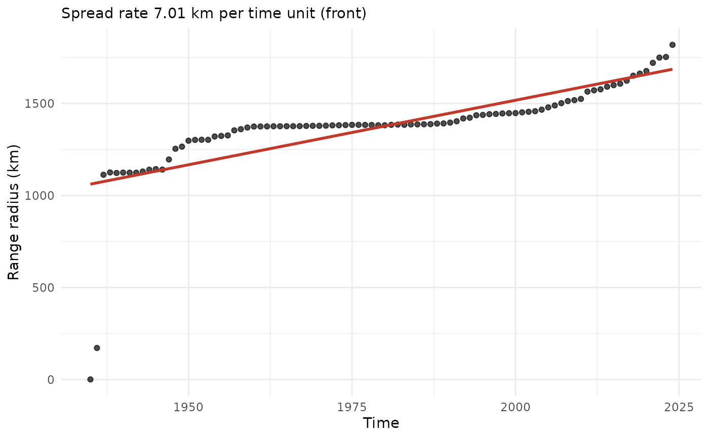
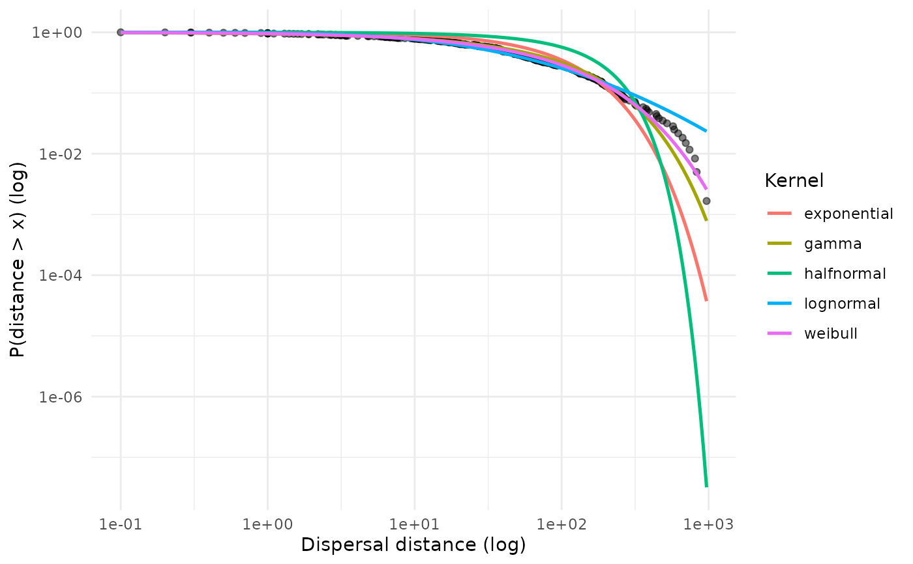
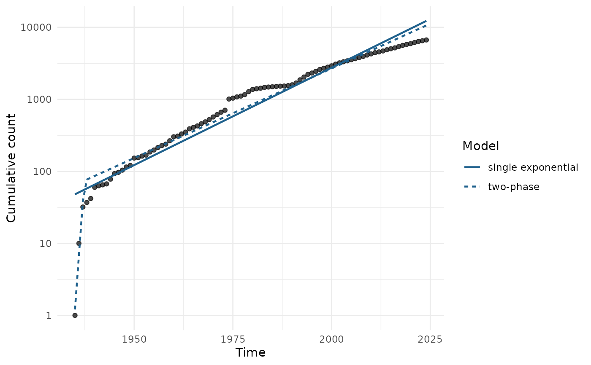

autoplot() methods draw the standard figure for each kind of result:
Usage
# S3 method for class 'inv_occurrence'
autoplot(object, ...)
# S3 method for class 'inv_spread'
autoplot(object, ...)
# S3 method for class 'inv_kernel'
autoplot(object, type = c("density", "tail"), ...)
# S3 method for class 'inv_lag'
autoplot(object, log_y = TRUE, ...)
# S3 method for class 'inv_establishment'
autoplot(object, ...)
# S3 method for class 'inv_spatial_block_cv'
autoplot(object, ...)Details
<inv_occurrence>: a range map of records coloured by time.<inv_spread>: range radius (or cell distance) against time with the fitted spread rate.inv_kernel: dispersal distances with fitted kernels, either as densities or as a log-log survival plot that shows the tail.inv_lag: the cumulative invasion curve with the single and two-phase fits and the end of the lag phase.inv_establishment: the establishment dose-response curve.inv_spatial_block_cv: a map of records coloured by fold.
Maps here are quick views in plain longitude and latitude. For publication maps with basemaps and projections, pass results to the companion package tidymapr.
Examples
occ <- inv_occurrence(cane_toad, lon = lon, lat = lat, time = year)
autoplot(occ)

spread <- inv_spread_rate(occ, origin = c(145.79, -17.10), quantile = 0.95)
autoplot(spread)

k <- inv_dispersal_kernel(dplyr::filter(inv_dispersal, species == "sp_a"),
distance_m)
autoplot(k, type = "tail")

autoplot(inv_lag_phase(cane_toad, time = year))
